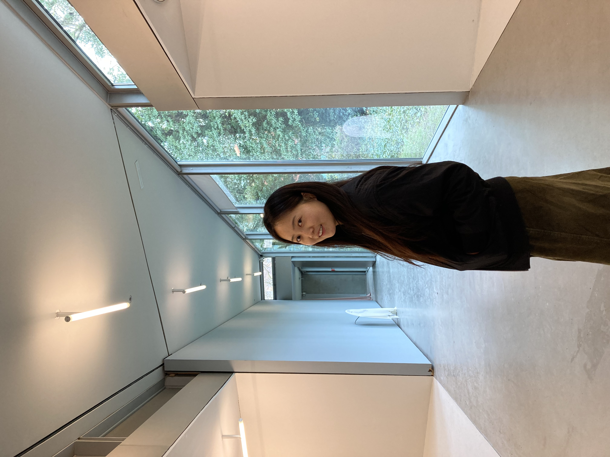

Designing thoughtful systems
for complex product experiences.
I’m Hyeonji, a Korean Product Designer based in Berlin, Germany. Currently at DeepL, I’ve spent the last 3 years working closely with PMs and engineers on self-serve growth, pricing experiences, and the core logged-in product.
I enjoy untangling ambiguous problems and turning them into experiences that feel clear and intuitive. I care about work that ships and creates real impact — not just polished screens. Outside of design, I spend a lot of time reading📖, working out🏃♀️🚲🏔️⛵️🏊♀️, learning languages🗣️, and thinking about how people navigate complexity in both products and everyday life🧠.
